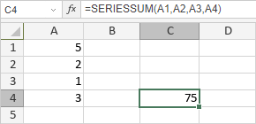

SERIESSUM funkcija
SERIESSUM funkcija je jedna od funkcija za matematiku i trigonometriju. Koristi se za izračunavanje zbira stepenog reda.
Sintaksa
SERIESSUM(x, n, m, coefficients)
SERIESSUM funkcija ima sledeće argumente:
| Argument | Opis |
|---|---|
| x | Ulazna vrednost za stepeni red. |
| n | Početni stepen na koji se podiže x. |
| m | Korak za koji se povećava n za svaki sledeći član reda. |
| coefficients | Koeficijenti kojima se množi svaki uzastopni stepen vrednosti x. Broj coefficients određuje broj članova stepenog reda. |
Napomene
Kako primeniti SERIESSUM funkciju.
Primeri
Slika ispod prikazuje rezultat koji vraća SERIESSUM funkcija.
